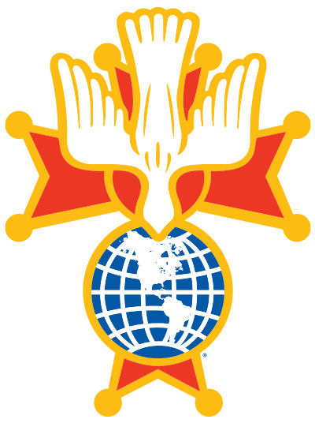

The Patriotic Degree of the Knights of Columbus
The Fourth Degree is the patriotic degree of the Knights of Columbus. Its members, known as Sir Knights, are dedicated to the principle of patriotism, promoting love of God and love of country, and honoring those who have served our nation.
Fr. Stephen Badin Assembly 823 brings together Fourth Degree Knights from three local councils:
We proudly serve the Firelands Catholic Parishes (St. Paul, St. Mary, and St. Anthony), St. Alphonsus, St. Joseph in Monroeville, Our Lady of Lourdes in New London, and St. Mary in Wakeman.
Council 626 Hall
254 West Main Street
Norwalk, OH 44857
Phone: (419) 677-0706 (call or text)
Email: kofc626@gmail.com
When: 2nd Monday of each month
Time: 8:30 PM, following the Council 626 3rd Degree meeting
Who: 4th Degree Members
Location: Council 626 Hall, 254 West Main Street, Norwalk, OH 44857
Any 3rd Degree Knight in good standing may join the Fourth Degree.
Interested? Talk to any Assembly officer or contact us to learn about the next exemplification.
| Faithful Navigator | Paul J. Depinet |
|---|---|
| Faithful Comptroller | Christopher Tomasulo |
| Faithful Friar | Rev. Valerian Larawa |
| Faithful Captain | Scott A. Meyer |
| Faithful Admiral | Eric E. Myers |
| Faithful Purser | John C. Hammersmith |
| Faithful Pilot | Stephen F. Schumm |
| Faithful Scribe | Thomas E. Blechschmidt |
| Inner Sentinel | Jarett R. Burns |
| Outer Sentinel | Timothy S. Dyer |
| One Year Trustee | Kevin J. Hipp |
| Two Year Trustee | James R. Pirc |
| Three Year Trustee | Dennis A. Sokol |
| Color Corps Commander | Steven D. Balcerzak |
Interested in the Fourth Degree or need the Color Corps for an event? Reach out to us:
4th Degree: 2nd Monday @ 8:30 PM